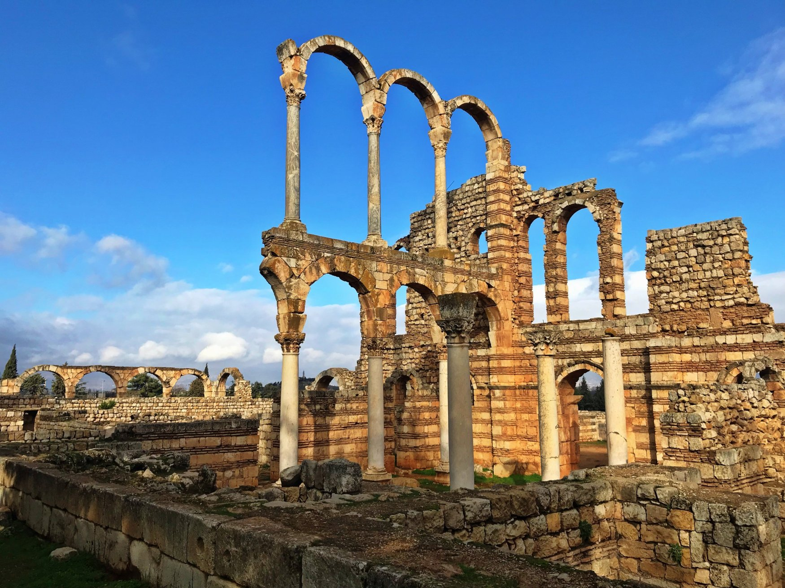
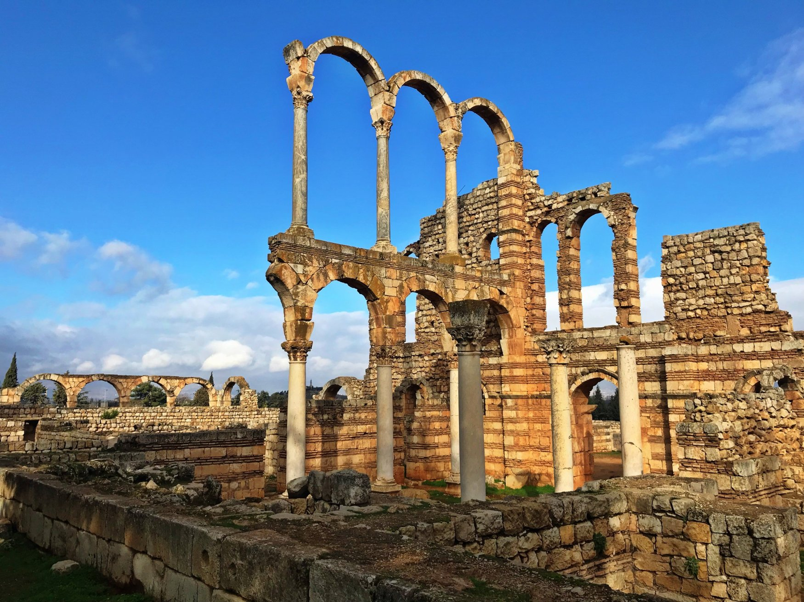

About:
"Founded during the Umayyad period under Caliph Walid Ibn Abd Al-Malak (705-715), the city of Anjar bears outstanding witness to the Umayyad civilization. Anjar is an example of an inland commercial centre, at the crossroads of two important routes: one leading from Beirut to Damascus and the other crossing the Bekaa and leading from Homs to Tiberiade." ~UNESCO
 
